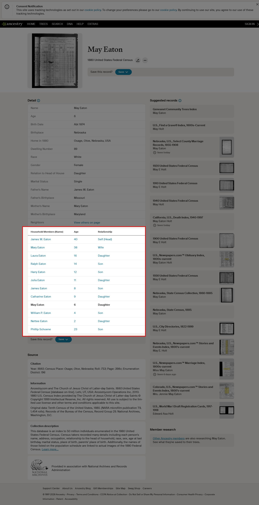
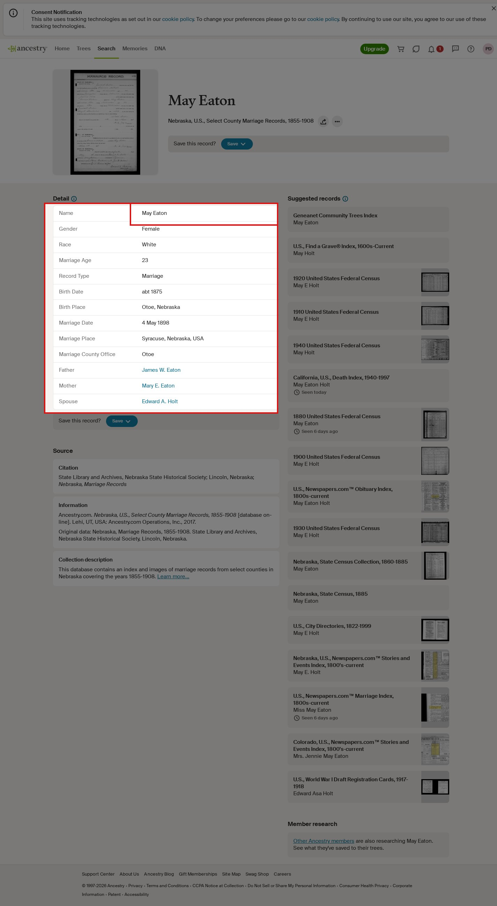
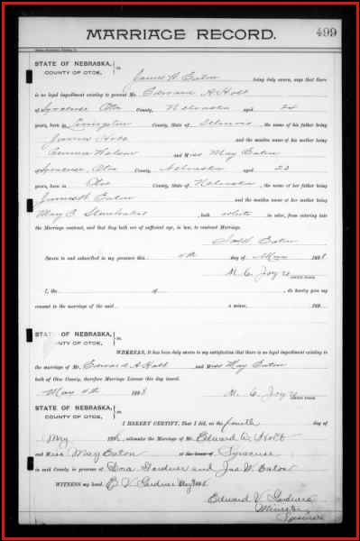

May Eaton 1874–1941
Great-great-grandmother of Shayla Nadah Alamdari, wife of Peter.
May Eaton was born on 29 May 1874 in Nebraska, United States1, the daughter of John Eaton and John Eaton's wife1,4,5,6. She married Edward Asa Holt on 4 May 1898 in Nebraska, United States7. She died on 19 Apr 1941 in Los Angeles, California, United States1,2 and was buried at Glendale, California, United States3.
Family
- Parents
- John Eaton d. 1905 and John Eaton's wife d. 1912 documented
- Husband
- Edward Asa Holt d. 1941 · married on 4 May 1898 in Nebraska, United States7
- Children
- Berniece Wilmina Holt b. 1910 documented
Life events
| Event | Date | Place and details |
|---|---|---|
| Born | 29 May 1874 | Nebraska, United States1 |
| Married | 4 May 1898 | with Edward Asa Holt Nebraska, United States7 |
| Died | 19 Apr 1941 | Los Angeles, California, United States1,2 |
| Buried | 22 Apr 1941 | Glendale, California, United States3 |
Records





Sources
- California Death Index entry for May Eaton Holt (1874–1941).
Name: May Eaton Holt [May Eaton Eaton] | Gender: Female | Birth Date: 29 May 1874 | Birth Place: Nebraska | Death Date: 19 Apr 1941 | Death Place: Los Angeles | Mother's Maiden Name: Stonbraker | Father's Surname: Eaton
Born 29 May 1874 in Nebraska; Father's Surname: Eaton, Mother's Maiden Name: Stonbraker
- Certificate of Death, May Eaton Holt, Los Angeles, California, 19 April 1941 (District No. 1901, Registrar's No. 5633).
District No. 1901 | Registrar's No. 5633 | 1. FULL NAME: Holt, May Eaton | 2. PLACE OF DEATH: Los Angeles | Los Angeles | 1132 South Wooster Street | 4 yrs | 6(a) Married | 6(b) Edward A. Holt | 6(c) 67 years | 7. BIRTHDATE OF DECEASED: May 29 1874 | 8. AGE: 66 Yrs | 10 Mos | 20 Days | 9. BIRTHPLACE: Syracuse, Nebraska | 12. FATHER NAME: James W. Eaton | 13. BIRTHPLACE: St. Charles, Missouri | 14. MOTHER MAIDEN NAME: Mary E. Stonbraker | 15. BIRTHPLACE: Hagerstown, Maryland | 16(a) INFORMANT: Edward A. Holt | 1132 S. Wooster St., Los Angeles | 17(a) Burial | April 22, 1941 | Forest Lawn Cemetery | 20. DATE OF DEATH: April 19 1941 | 5:45 am
California Certificate of Death (District No. 1901, Registrar's No. 5633, filed 21 Apr 1941): Holt, May Eaton, female, Caucasian, married, housewife, wife of Edward A. Holt (age 67; informant at 1132 S. Wooster St., Los Angeles), born 29 May 1874 in Syracuse, Nebraska to father James W. Eaton (born St. Charles, Missouri) and mother Mary E. Stonbraker (born Hagerstown, Maryland), resided 4 years in Los Angeles and in California at 1132 South Wooster Street, Los Angeles, died there 19 April 1941 at 5:45 a.m., aged 66 years, 10 months, 20 days; immediate cause of death: acute coronary artery occlusion (1 hr) due to previous occlusion Dec 1940 (4 mos) and cardiac decompensation / general anasarca (5 mos); buried 22 April 1941 at Forest Lawn Cemetery.
- Find a Grave Memorial #85427472: May Eaton Holt (1874–1941), Memorial 85427472, Plot Eventide, Map 1, Lot 1759, Space 2.
May Eaton Holt | Birth 29 May 1874 Otoe County, Nebraska, USA | Death 19 Apr 1941 (aged 66) Los Angeles County, California, USA | Burial: Forest Lawn Memorial Park, Glendale, Los Angeles County, California, USA | Plot: Eventide, Map 1, Lot 1759, Space 2
Buried 22 April 1941 (date from death certificate S-fs-QG5B-1G85) at Forest Lawn Memorial Park, Glendale, Los Angeles County, California, Plot Eventide, Map 1, Lot 1759, Space 2.
- Peter's tree, danenberg.sql, 2007–2015, parentages 115.
- Marriage of May Eaton and Edward A. Holt, 4 May 1898, Syracuse, Otoe County, Nebraska.
Name: May Eaton | Gender: Female | Race: White | Marriage Age: 23 | Record Type: Marriage | Birth Date: abt 1875 | Birth Place: Otoe, Nebraska | Marriage Date: 4 May 1898 | Marriage Place: Syracuse, Nebraska, USA | Marriage County Office: Otoe | Father: James W. Eaton | Mother: Mary E. Eaton | Spouse: Edward A. Holt
father: James W. Eaton (John Eaton); mother: Mary E. Eaton
- Household of James W. Eaton, Osage, Otoe, Nebraska, 1880 US Census, Dwelling Number 89.
Name: May Eaton | Age: 6 | Birth Date: Abt 1874 | Birthplace: Nebraska | Home in 1880: Osage, Otoe, Nebraska, USA | Dwelling Number: 89 | Race: White | Gender: Female | Relation to Head of House: Daughter | Marital Status: Single | Father's Name: James W. Eaton | Father's Birthplace: Missouri | Mother's Name: Mary Eaton | Mother's Birthplace: Maryland | Neighbors: View others on page || Household: James W. Eaton 40 Self (Head); Mary Eaton 38 Wife; Laura Eaton 16 Daughter; Ralph Eaton 14 Son; Harry Eaton 12 Son; Julia Eaton 11 Daughter; James Eaton 8 Son; Catharine Eaton 9 Daughter; May Eaton 6 Daughter; William P. Eaton 4 Son; Nettee Eaton 2 Daughter; Phillip Schoene 23 Son
father: James W. Eaton (John Eaton); mother: Mary Eaton
- Otoe County, Nebraska Marriage Certificate No. 521 (4 May 1898): Edward A. Holt & May Eaton, Otoe County, Certificate No. 521 (record 900073558, image 47291_552527-00746).
STATE OF NEBRASKA, COUNTY OF OTOE | No. 521 | Mr. Edward A. Holt (Age 24, Born Illinois, Residence Unadilla, Nebr., Father Asa Holt, Mother Jane Wilson) and Miss May Eaton (Age 23, Born Otoe Co., Nebr., Residence Syracuse, Nebr., Father James W. Eaton, Mother Mary E. Eaton) | License issued 2nd May 1898 by J. W. Eaton, County Judge | Married 4th May 1898 at Syracuse by E. L. Barch, Pastor M.E. Church | Witnesses: Mr. Chas. Joyce, Miss Nettie Eaton.
Original Otoe County, Nebraska Marriage License and Certificate (No. 521) for the marriage of Edward A. Holt (age 24, white, born in Illinois, resident of Unadilla, Otoe County, Nebraska, son of Asa Holt and Jane Wilson) and May Eaton (age 23, white, born in Otoe County, Nebraska, resident of Syracuse, Otoe County, Nebraska, daughter of James W. Eaton and Mary E. Eaton), solemnized 4 May 1898 at Syracuse, Otoe County, Nebraska by E. L. Barch, Pastor of M. E. Church, in the presence of Mr. Chas. Joyce and Miss Nettie Eaton. Supplies the primary certificate image for S-parent-links-online-marriage-of-may-eaton-and-edward-a-holt-4-ma. Note, 2026-11-16 (family session): the saved image is a 399x600 thumbnail; it is legibly the Edward A. Holt and May Eaton record, aged 24, Syracuse, Otoe County, but the parents' names are not reliably readable at this size (two direct readings gave the groom's father as 'Isaac' or 'James' Holt and his mother as 'Emma Haton/Halen', and the bride's father as 'James H. Eaton'), and the page number on the image reads 499. The parents given above come from the index, not from this image; a full-size image is needed.